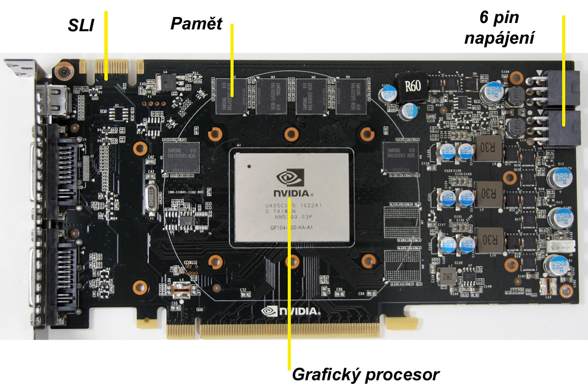

-
Unifikované shadery
moderní náhrada za pixelové jednotky. Jsou programovatelné a díky tomu nemusí počítat pouze zobrazovaná data, ale i výpočty pro vědu a další (GPGPU, viz například OpenCL, DirectCompute, CUDA). V současné době (2014) jde v podstatě o RISC procesory. Shadery AMD (architektura GCN) se dále dělí na skalární (celočíselnou) a vektorovou část (pohyblivou řádovou čárku). -
Řadič pamětí
stará se o komunikaci mezi grafickou pamětí a GPU. NVIDIA i AMD podporují až GDDR6. -
TMU jednotky (Texture mapping unit)
mapuje textury na objekty. -
ROP jednotky (Render Output unit)
zabezpečuje výstup dat z grafické karty. -
Paměť
zde jsou ukládány informace potřebné pro činnost GPU.
